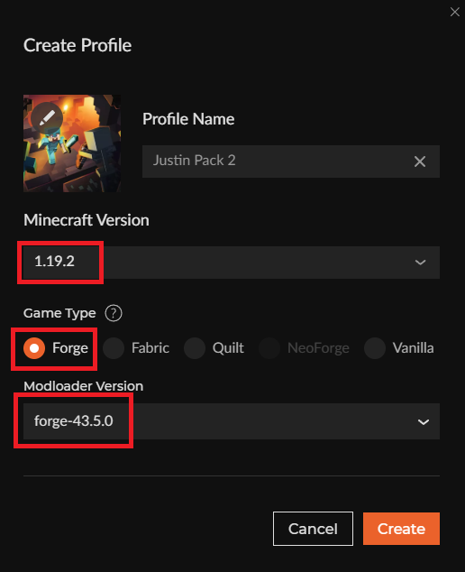
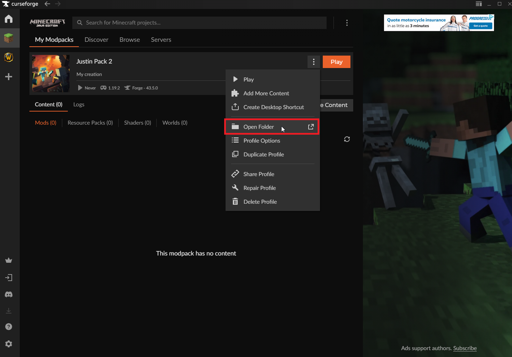
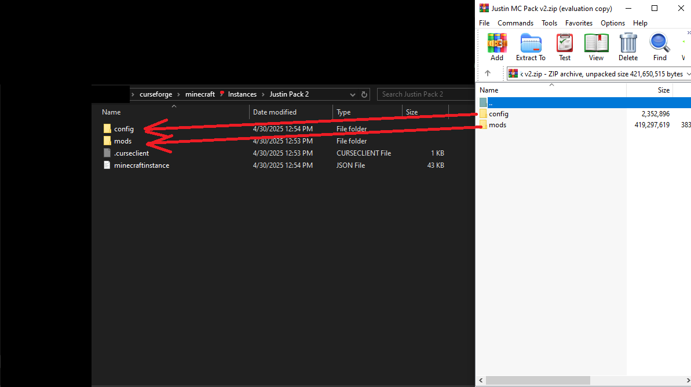
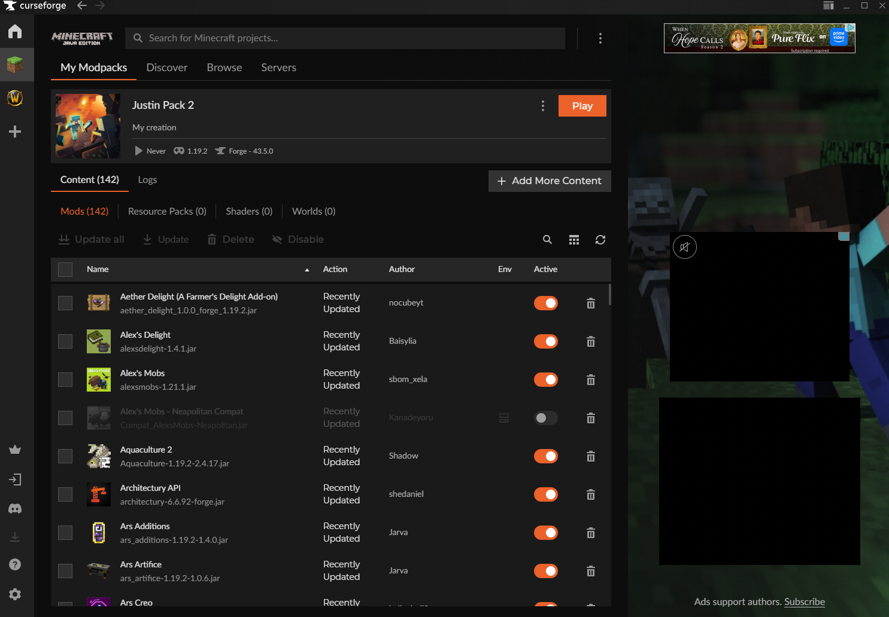

Ensure that Minecraft version is set to 1.19.2, game type is set to Forge, and modloader version is forge-43.5.0

The zip files are provided at this google drive link

Say "yes", "yes to all", or "replace" if prompted to overwrite existing files

If you navigate back to Curseforge, you should see that all mods are now populated.
